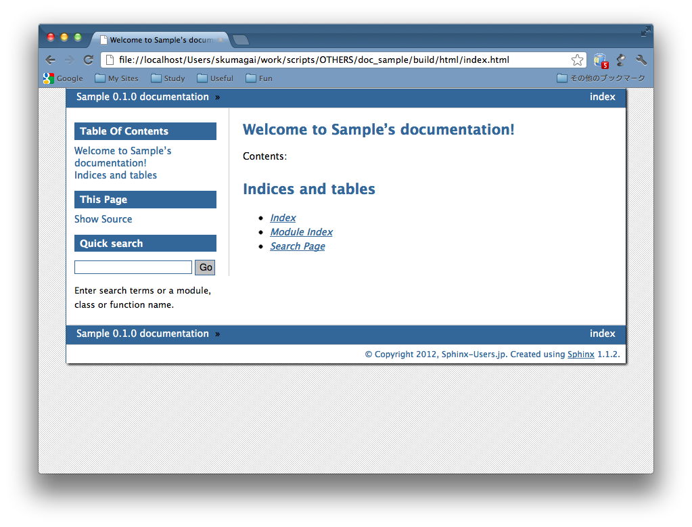

テーマを自分で作ってみたいけど、
どういう作りなの？
HTML テーマの構造
pyconjp
+ theme.conf
+ layout.html
:
+ static
+ pyconjp.css_t
+ pyconjp_2012_logo.png
theme.conf
[theme]
inherit = basic
stylesheet = pyconjp.css_t
pygments_style = friendly
[options]
rightsidebar = false
[theme] セクション
[theme] セクション - inherit
[theme] セクション - stylesheet
[theme] セクション - pygments_style
[options] セクション
テンプレートファイル
{#
default/layout.html
~~~~~~~~~~~~~~~~~~~
Sphinx layout template for the default theme.
:copyright: Copyright 2007-2011 by the Sphinx team, see AUTHORS.
:license: BSD, see LICENSE for details.
#}
{% extends "basic/layout.html" %}
{% if theme_collapsiblesidebar|tobool %}
{% set script_files = script_files + ['_static/sidebar.js'] %}
{% endif %}
テンプレートファイル
静的ファイル
スタイルシート
static template って何？
pyconjp.css_t
:
div.sphinxsidebar {
margin: 0;
padding: 0.5em 15px 15px 0;
width: {{ theme_sidebarwidth|toint - 20 }}px
float: right;
font-size: 1em;
text-align: left;
}
:
書き方:
* オプション名に theme_ プレフィクスを付ける
* 置換したい箇所に {{ , }} を使って埋め込む
theme.conf
[theme]
inherit = basic
stylesheet = pyconjp.css_t
pygments_style = sphinx
[options]
sidebarwidth = 170
pyconjp.css
:
div.sphinxsidebar {
margin: 0;
padding: 0.5em 15px 15px 0;
width: 150px
float: right;
font-size: 1em;
text-align: left;
}
:
* 数値だけではなく、文字列も OK
* HTML テンプレートと同様にフィルタも使えます
これらを一つのディレクトリに入れます
pyconjp
+ theme.conf
+ layout.html
:
+ static
+ pyconjp.css_t
+ pyconjp_2012_logo.png
このディレクトリを Sphinx の
ドキュメントルートに置きます。
some_document
+ _static
+ _templates
+ conf.py
+ index.rst
+ pyconjp <-- New!
conf.py でテーマのパスを指定します。これで make html すると。。。
# Add any paths that contain custom themes here, relative to
# this directory.
html_theme_path = ["."]
自作テーマのドキュメントが！！
（下の画像はイメージです）
